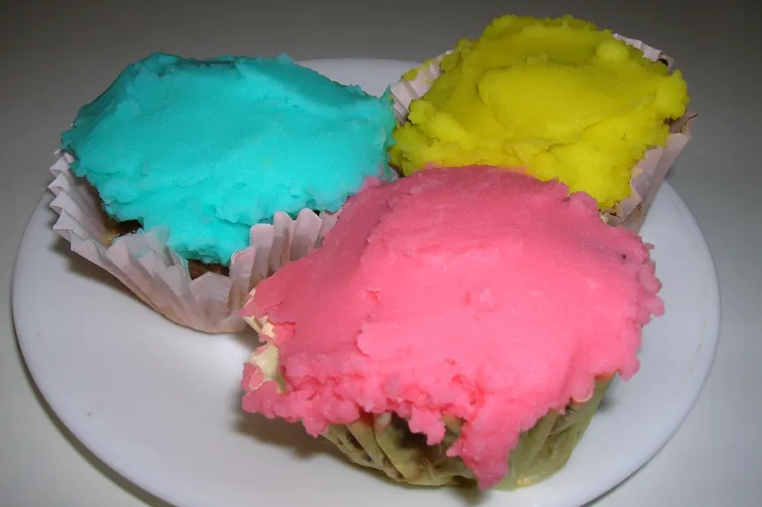

CUPCAKES

Description
April Fools Day prank to play on all those practical jokers! These are really meatloaves frosted with colorful mashed potatoes!!! Disguised as cupcakes of course :wink: :wink: From a kid friendly web site.
Ingredients:
- 1 lb lean ground beef
- 1/2 cup seasoned bread crumbs
- 1 cup grated monterey jack cheese
- 3 tablespoons ketchup
- 1 egg
- 1/2 teaspoon celery salt
- 1/4 teaspoon pepper
- 3 cups mashed potatoes. prepared food coloring
Steps:
- Preheat oven to 375 degrees.
- Line 12 muffin tin cups with foil bake cups.
- In a large bowl, mix together all of the meat loaf ingredients until well combined. Divide the mixture evenly among the lined cups (the liners should be about three quarters full).
- Place the filled muffin tins on a cookie sheet and bake the cupcakes for about 15 minutes or until cooked through.
- Divide the mashed potatoes among three small bowls and stir a few drops of food coloring into each batch to create blue, yellow, and pink pastel frostings.
- Spread a generous dollop on each cupcake.